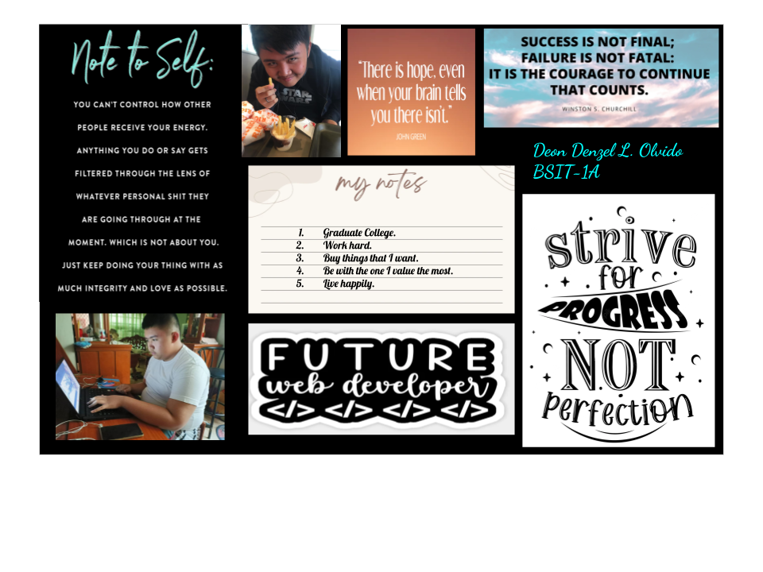
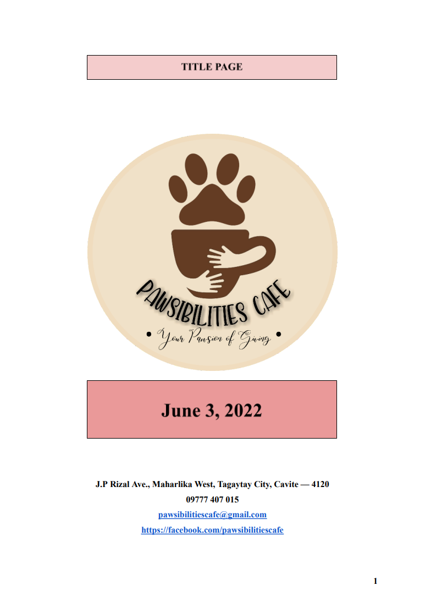

Hi! My name is Deon Denzel L. Olvido, and I’m currently in my third year of taking my Bachelor of Science in Information and Technology. This space showcases my skills, projects, and accomplishments. Feel free to explore and learn more about my work.
- I am a straightforward person who focuses on the task at hand, ensuring efficient and effective completion of my work.
- I have good communication skills, allowing me to work seamlessly with others and convey ideas clearly.
- I am always eager to learn new things, constantly seeking opportunities to grow and expand my knowledge.
- I have some knowledge in graphic design, enabling me to create visually appealing designs when needed.
- I am determined to fix technical issues when encountered, ensuring minimal disruptions to tasks or projects.
- I can handle multiple tasks in a single session, maintaining productivity and quality.
- Dreamboard Design: A visual representation of my goals and inspirations, showcasing my graphic design skills.

- Pawsibilities Café Business Plan: Created in June 2022, this project was a business plan for a café concept centered around pets. The idea aimed to create a warm and welcoming environment for pet lovers to connect while enjoying delicious treats. It demonstrates my ability to conceptualize and present innovative ideas.

If you'd like to get in touch, feel free to reach out via email at ddlolvido@pcu.edu.ph.